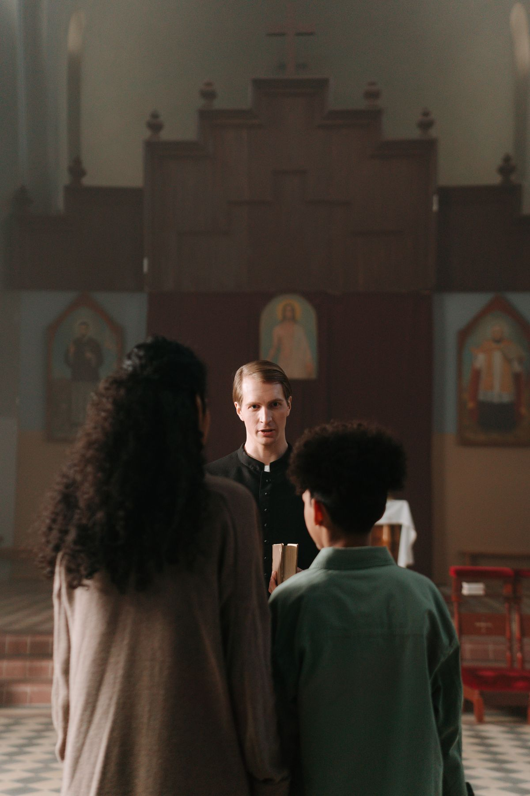
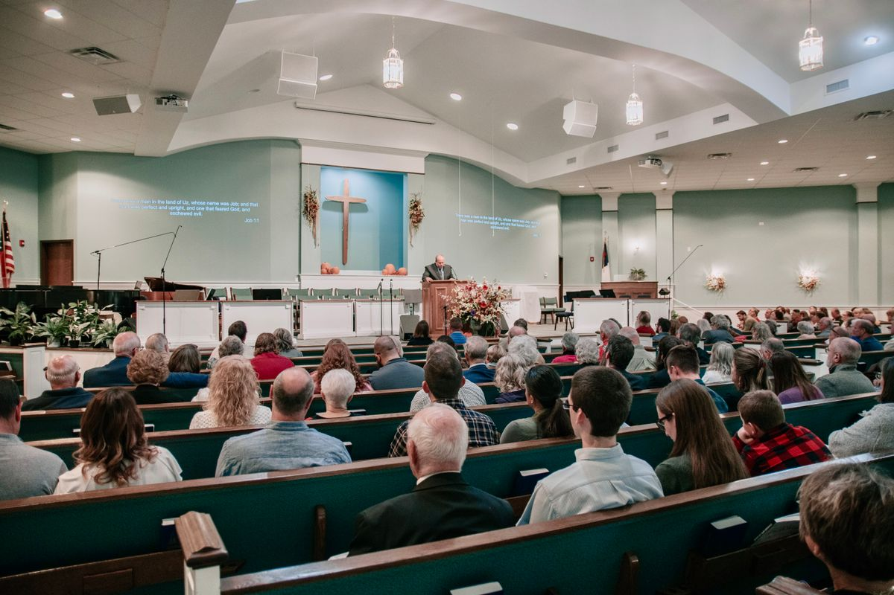
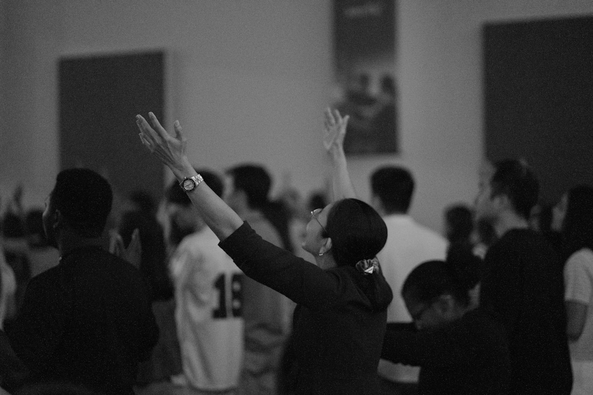

지금 당신의 교회, 어디쯤 있나요?
그리스도의 제자들을 찾아 준비시켜
세상 모든 영역으로 파송한다.
"그대가 많은 증인을 통하여 나에게서 들은 것을 믿음직한 사람들에게 전수하십시오.
그리하면 그들이 다른 사람들을 또한 가르칠 수 있을 것입니다" — 디모데후서 2:2 (새번역)
찾고 · 세우고 · 보낸다
Find · Form · Send
그리스도의 제자들을 찾아 준비시켜
세상 모든 영역으로 파송한다.
지친 목회자 곁에 사람이 있고,
세워진 교회가 다음 교회를 세우며,
성도의 식탁에 낯선 사람이 앉게 되는 것.
K-Church 911 사역의 핵심
하나님의 마음에 합한 사람을 찾고,
그 사람이 설 때까지 곁에 있는 것.
이것이 K-Church 911이 존재하는 이유입니다.
목회자의 아픔과 필요를 먼저 경청합니다. 판단 없이, 곁에서 듣는 것이 시작입니다.
현장에 맞는 길을 함께 찾습니다. 정답을 주는 것이 아니라, 스스로 발견하도록 돕습니다.
프론트에 함께 섭니다. 혼자가 아닌 동행으로, 하나님 나라의 사역을 펼쳐갑니다.
찾고
오늘 교회가 처한 현실
많은 목회자들이 혼자 감당하고 있습니다.
Kchurch911은 그 현실을 외면하지 않습니다.
하나님 나라는 눈으로 볼 수 있는 모습으로 오지 않습니다.
또 여기 있다, 저기 있다 말할 수도 없습니다.
장소도, 프로그램도 아닙니다.
바로, 당신 가운데에 있습니다. (눅 17:20~21)
사랑받는 자녀로 회복되고(Sonship), 그 자녀 됨으로 하나님 나라를 사는 것(Kingship) — 이것이 우리가 부름받은 이유입니다.
필요가 출발이고, 부르심이 목적지입니다.
K-Church 911은 그 사이를 걷는 동역자입니다.
찾고 → 세우고 → 보낸다
한 사람의 영적 여정
낯선 도시에 정착한 한 사람이 그리스도를 만나고, 제자가 되어 지구촌 땅 끝까지 보내지기까지 — 네 개의 플랫폼이 그 길을 받칩니다.
세우고
Kchurch911이 다른 이유
솔루션을 먼저 꺼내지 않습니다. 당신 교회의 막힌 지점을 먼저 듣습니다.
제 이야기를 먼저 드리겠습니다.
85명을 넘어 100명을 눈앞에 두고 있었습니다. 그리고 한순간에 무너졌습니다.
지금 생각하면 저는 설계도 없이 꿈만 커서, 세상에 둘도 없는 멋지고 화려하고 높은 건물을 지으려 했던 철부지 같은 목사였습니다.
개척교회부터 대형교회까지 섬겨 보았습니다. 개척을 통해 일어나는 것도, 무너지는 것도 겪었습니다.
그래서 지금 막혀 있는 그 자리가 어떤 자리인지 압니다. 솔루션을 먼저 꺼내지 않는 이유가 그것입니다.
스무 살 전도사로 시작해 한국과 미국에서 40년, 그중 25년은 시애틀에서 교회 개척 후 지금까지 섬기고 있습니다. 지금도 선교 지향적인 성경적 교회를 실험하고 있습니다. 현장에서 배운 4동력 코칭으로, 개척부터 확산까지 함께 걷습니다.

진단 다음은 1:1 목회 컨설팅입니다. 첫 상담은 무료입니다.
세우고
연계 파트너 · Hebron Platform (BAM)
Hebron Platform은 비즈니스로 사역을 지속시키는(BAM) 연계 파트너입니다. 각 도구는 독립적으로 완전하지만, 코칭과 함께 쓰일 때 성경적 교회를 세우는 생태계가 됩니다.
Hebron Platform 제공 · HebronAltar
시애틀지구촌교회에서 실제로 쓰고 있는 Hebron(21일 경청 훈련 · 목장 · VIP · 기도 벨트 · 설교 통역)을 2026년 하반기, 함께 다듬어 갈 소수 교회에 무료로 엽니다.
보낸다
Business as Mission
아브람은 장막을 치고 제단을 쌓았습니다(창 12:7-8; 13:18). 사업과 사역은 둘이 아닙니다.
각자가 받은 은사대로(고전 12:4-7), 한 팀으로, 삶의 모든 자리에서 하나님 나라를 넓힙니다.
수익은 목적이 아니라 제단을 지키는 청지기의 몫입니다.

Kingdom OS · 미래 로드맵
교회·도시·영성·교육·선교·기술을 하나의 시스템으로 — 점진적으로, 그러나 서로 연결되며 확장되는 다섯 단계입니다.
보낸다
함께 섬기기 · 사역 동역
Kchurch911은 후원과 동역으로 세워지는 사역입니다. 혼자서는 한 교회도 오래 받치지 못합니다.
현재 비영리 법인(501(c)(3)) 설립을 진행하고 있습니다. 승인 전까지는 후원금에 대한 세금 공제가 적용되지 않습니다.

보낸다
코칭 동역자를 찾습니다
한 사람이 코칭할 수 있는 교회에는 한계가 있습니다.
경험이 흘러가는 구조가 있을 때, 비로소 더하기가 곱하기가 됩니다.
먼저 그 길을 걸어보신 분들의 자리를 만들어갑니다.
이론이 아니라 실제로 세워본 경험입니다. 사람이 세워지고, 공동체가 자라고, 다음 세대가 이어진 열매 — 그 자리를 지나오신 분을 모십니다.
프로그램이 아니라 성경이 말하는 교회입니다. 섬김으로 이끌고, 제자가 제자를 낳고, 일상이 선교지가 되는 정신을 함께 나눌 수 있는 분을 모십니다.
강의실에서 검증한 것을 현장에서 확인합니다. 커리큘럼 설계·감수, 특강, 진단 도구의 신학적 검증.
은퇴는 끝이 아니라 가장 넓게 섬길 수 있는 때입니다. 1:1 멘토링, 개척·전환·승계 동행.
지금도 현장에 서 계신 분의 언어는 다릅니다. 같은 시대를 살아가는 목회자의 동료 코칭.
타문화에서 배운 것이 이민 목회의 답이 됩니다. 선교적 교회 코칭, BAM 자문, 파송 연결.
평신도 목자로 실제 영혼을 품고 목장을 배가해 보신 분. 현장의 가장 구체적인 지혜.
이미 각자의 사역이 있으신 분들입니다.
준비와 일정은 저희가 맡고, 가장 잘하시는 그 시간만 써 주시면 됩니다.
막힌 사안 하나에 대한 자문 통화, 또는 자료 감수 한 건. 대부분 여기서 시작합니다.
목회자 딱 한 분과 동행하십니다. 6개월처럼 기간을 정해두셔도 됩니다.
특강·세미나, 커리큘럼 공동 설계, 지역 코칭 그룹. 원하실 때 여기까지 오시면 됩니다.
동역은 한쪽이 주기만 하면 오래가지 못합니다. 먼저 섬기는 것이 순서입니다.
이 네트워크는 지금 첫 자리를 만들어가는 중입니다.
화려한 명단보다, 진짜로 함께 걸을 한 사람을 먼저 찾습니다.
연락 주시면 48시간 이내에 접수 확인을 드리고, 일정은 맞춰 드립니다.
찾고
해결 · 3단계로 시작합니다
① 2분 자가진단 — 우리 교회 어디가 막혔는지 확인
② 무료 상담 신청 — 사역 40년 · 개척 목회 25년의 코치와 30분 대화
③ 함께 걷습니다 — 당신 교회에 맞는 길을 그립니다
* 48시간 이내 답변 드립니다 · No spam · Unsubscribe anytime